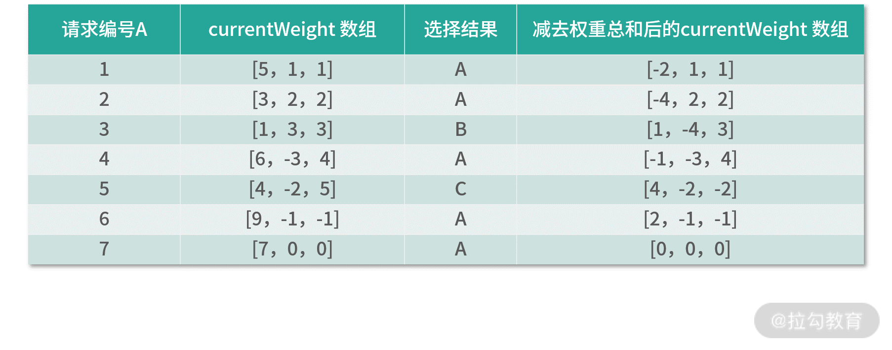

- 00 开篇词 深入掌握 Dubbo 原理与实现，提升你的职场竞争力.md
- 01 Dubbo 源码环境搭建：千里之行，始于足下.md
- 02 Dubbo 的配置总线：抓住 URL，就理解了半个 Dubbo.md
- 03 Dubbo SPI 精析，接口实现两极反转（上）.md
- 04 Dubbo SPI 精析，接口实现两极反转（下）.md
- 05 海量定时任务，一个时间轮搞定.md
- 06 ZooKeeper 与 Curator，求你别用 ZkClient 了（上）.md
- 07 ZooKeeper 与 Curator，求你别用 ZkClient 了（下）.md
- 08 代理模式与常见实现.md
- 09 Netty 入门，用它做网络编程都说好（上）.md
- 10 Netty 入门，用它做网络编程都说好（下）.md
- 11 简易版 RPC 框架实现（上）.md
- 12 简易版 RPC 框架实现（下）.md
- 13 本地缓存：降低 ZooKeeper 压力的一个常用手段.md
- 14 重试机制是网络操作的基本保证.md
- 15 ZooKeeper 注册中心实现，官方推荐注册中心实践.md
- 16 Dubbo Serialize 层：多种序列化算法，总有一款适合你.md
- 17 Dubbo Remoting 层核心接口分析：这居然是一套兼容所有 NIO 框架的设计？.md
- 18 Buffer 缓冲区：我们不生产数据，我们只是数据的搬运工.md
- 19 Transporter 层核心实现：编解码与线程模型一文打尽（上）.md
- 20 Transporter 层核心实现：编解码与线程模型一文打尽（下）.md
- 21 Exchange 层剖析：彻底搞懂 Request-Response 模型（上）.md
- 22 Exchange 层剖析：彻底搞懂 Request-Response 模型（下）.md
- 23 核心接口介绍，RPC 层骨架梳理.md
- 24 从 Protocol 起手，看服务暴露和服务引用的全流程（上）.md
- 25 从 Protocol 起手，看服务暴露和服务引用的全流程（下）.md
- 26 加餐：直击 Dubbo “心脏”，带你一起探秘 Invoker（上）.md
- 27 加餐：直击 Dubbo “心脏”，带你一起探秘 Invoker（下）.md
- 28 复杂问题简单化，代理帮你隐藏了多少底层细节？.md
- 29 加餐：HTTP 协议 + JSON-RPC，Dubbo 跨语言就是如此简单.md
- 30 Filter 接口，扩展 Dubbo 框架的常用手段指北.md
- 31 加餐：深潜 Directory 实现，探秘服务目录玄机.md
- 32 路由机制：请求到底怎么走，它说了算（上）.md
- 33 路由机制：请求到底怎么走，它说了算（下）.md
- 34 加餐：初探 Dubbo 动态配置的那些事儿.md
- 35 负载均衡：公平公正物尽其用的负载均衡策略，这里都有（上）.md
- 36 负载均衡：公平公正物尽其用的负载均衡策略，这里都有（下）.md
- 37 集群容错：一个好汉三个帮（上）.md
- 38 集群容错：一个好汉三个帮（下）.md
- 39 加餐：多个返回值不用怕，Merger 合并器来帮忙.md
- 40 加餐：模拟远程调用，Mock 机制帮你搞定.md
- 41 加餐：一键通关服务发布全流程.md
- 42 加餐：服务引用流程全解析.md
- 43 服务自省设计方案：新版本新方案.md
- 44 元数据方案深度剖析，如何避免注册中心数据量膨胀？.md
- 45 加餐：深入服务自省方案中的服务发布订阅（上）.md
- 46 加餐：深入服务自省方案中的服务发布订阅（下）.md
- 47 配置中心设计与实现：集中化配置 and 本地化配置，我都要（上）.md
- 48 配置中心设计与实现：集中化配置 and 本地化配置，我都要（下）.md
- 49 结束语 认真学习，缩小差距.md
36 负载均衡：公平公正物尽其用的负载均衡策略，这里都有（下）
在上一课时我们了解了 LoadBalance 接口定义以及 AbstractLoadBalance 抽象类的内容，还详细介绍了 ConsistentHashLoadBalance 以及 RandomLoadBalance 这两个实现类的核心原理和大致实现。本课时我们将继续介绍 LoadBalance 的剩余三个实现。
LeastActiveLoadBalance
LeastActiveLoadBalance 使用的是最小活跃数负载均衡算法。它认为当前活跃请求数越小的 Provider 节点，剩余的处理能力越多，处理请求的效率也就越高，那么该 Provider 在单位时间内就可以处理更多的请求，所以我们应该优先将请求分配给该 Provider 节点。
LeastActiveLoadBalance 需要配合 ActiveLimitFilter 使用，ActiveLimitFilter 会记录每个接口方法的活跃请求数，在 LeastActiveLoadBalance 进行负载均衡时，只会从活跃请求数最少的 Invoker 集合里挑选 Invoker。
在 LeastActiveLoadBalance 的实现中，首先会选出所有活跃请求数最小的 Invoker 对象，之后的逻辑与 RandomLoadBalance 完全一样，即按照这些 Invoker 对象的权重挑选最终的 Invoker 对象。下面是 LeastActiveLoadBalance.doSelect() 方法的具体实现：
protected <T> Invoker<T> doSelect(List<Invoker<T>> invokers, URL url, Invocation invocation) {
// 初始化Invoker数量
int length = invokers.size();
// 记录最小的活跃请求数
int leastActive = -1;
// 记录活跃请求数最小的Invoker集合的个数
int leastCount = 0;
// 记录活跃请求数最小的Invoker在invokers数组中的下标位置
int[] leastIndexes = new int[length];
// 记录活跃请求数最小的Invoker集合中，每个Invoker的权重值
int[] weights = new int[length];
// 记录活跃请求数最小的Invoker集合中，所有Invoker的权重值之和
int totalWeight = 0;
// 记录活跃请求数最小的Invoker集合中，第一个Invoker的权重值
int firstWeight = 0;
// 活跃请求数最小的集合中，所有Invoker的权重值是否相同
boolean sameWeight = true;
for (int i = 0; i < length; i++) { // 遍历所有Invoker，获取活跃请求数最小的Invoker集合
Invoker<T> invoker = invokers.get(i);
// 获取该Invoker的活跃请求数
int active = RpcStatus.getStatus(invoker.getUrl(), invocation.getMethodName()).getActive();
// 获取该Invoker的权重
int afterWarmup = getWeight(invoker, invocation);
weights[i] = afterWarmup;
// 比较活跃请求数
if (leastActive == -1 || active < leastActive) {
// 当前的Invoker是第一个活跃请求数最小的Invoker，则记录如下信息
leastActive = active; // 重新记录最小的活跃请求数
leastCount = 1; // 重新记录活跃请求数最小的Invoker集合个数
leastIndexes[0] = i; // 重新记录Invoker
totalWeight = afterWarmup; // 重新记录总权重值
firstWeight = afterWarmup; // 该Invoker作为第一个Invoker，记录其权重值
sameWeight = true; // 重新记录是否权重值相等
} else if (active == leastActive) {
// 当前Invoker属于活跃请求数最小的Invoker集合
leastIndexes[leastCount++] = i; // 记录该Invoker的下标
totalWeight += afterWarmup; // 更新总权重
if (sameWeight && afterWarmup != firstWeight) {
sameWeight = false; // 更新权重值是否相等
}
}
}
// 如果只有一个活跃请求数最小的Invoker对象，直接返回即可
if (leastCount == 1) {
return invokers.get(leastIndexes[0]);
}
// 下面按照RandomLoadBalance的逻辑，从活跃请求数最小的Invoker集合中，随机选择一个Invoker对象返回
if (!sameWeight && totalWeight > 0) {
int offsetWeight = ThreadLocalRandom.current().nextInt(totalWeight);
for (int i = 0; i < leastCount; i++) {
int leastIndex = leastIndexes[i];
offsetWeight -= weights[leastIndex];
if (offsetWeight < 0) {
return invokers.get(leastIndex);
}
}
}
return invokers.get(leastIndexes[ThreadLocalRandom.current().nextInt(leastCount)]);
}
ActiveLimitFilter 以及底层的 RpcStatus 记录活跃请求数的具体原理，在前面的[第 30 课时]中我们已经详细分析过了，这里不再重复，如果有不清楚的地方，你可以回顾之前课时相关的内容。
RoundRobinLoadBalance
RoundRobinLoadBalance 实现的是加权轮询负载均衡算法。
轮询指的是将请求轮流分配给每个 Provider。例如，有 A、B、C 三个 Provider 节点，按照普通轮询的方式，我们会将第一个请求分配给 Provider A，将第二个请求分配给 Provider B，第三个请求分配给 Provider C，第四个请求再次分配给 Provider A……如此循环往复。
轮询是一种无状态负载均衡算法，实现简单，适用于集群中所有 Provider 节点性能相近的场景。 但现实情况中就很难保证这一点了，因为很容易出现集群中性能最好和最差的 Provider 节点处理同样流量的情况，这就可能导致性能差的 Provider 节点各方面资源非常紧张，甚至无法及时响应了，但是性能好的 Provider 节点的各方面资源使用还较为空闲。这时我们可以通过加权轮询的方式，降低分配到性能较差的 Provider 节点的流量。
加权之后，分配给每个 Provider 节点的流量比会接近或等于它们的权重比。例如，Provider 节点 A、B、C 权重比为 5:1:1，那么在 7 次请求中，节点 A 将收到 5 次请求，节点 B 会收到 1 次请求，节点 C 则会收到 1 次请求。
在 Dubbo 2.6.4 版本及之前，RoundRobinLoadBalance 的实现存在一些问题，例如，选择 Invoker 的性能问题、负载均衡时不够平滑等。在 Dubbo 2.6.5 版本之后，这些问题都得到了修复，所以这里我们就来介绍最新的 RoundRobinLoadBalance 实现。
每个 Provider 节点有两个权重：一个权重是配置的 weight，该值在负载均衡的过程中不会变化；另一个权重是 currentWeight，该值会在负载均衡的过程中动态调整，初始值为 0。
当有新的请求进来时，RoundRobinLoadBalance 会遍历 Invoker 列表，并用对应的 currentWeight 加上其配置的权重。遍历完成后，再找到最大的 currentWeight，将其减去权重总和，然后返回相应的 Invoker 对象。
下面我们通过一个示例说明 RoundRobinLoadBalance 的执行流程，这里我们依旧假设 A、B、C 三个节点的权重比例为 5:1:1。

- 处理第一个请求，currentWeight 数组中的权重与配置的 weight 相加，即从 [0, 0, 0] 变为 [5, 1, 1]。接下来，从中选择权重最大的 Invoker 作为结果，即节点 A。最后，将节点 A 的 currentWeight 值减去 totalWeight 值，最终得到 currentWeight 数组为 [-2, 1, 1]。
- 处理第二个请求，currentWeight 数组中的权重与配置的 weight 相加，即从 [-2, 1, 1] 变为 [3, 2, 2]。接下来，从中选择权重最大的 Invoker 作为结果，即节点 A。最后，将节点 A 的 currentWeight 值减去 totalWeight 值，最终得到 currentWeight 数组为 [-4, 2, 2]。
- 处理第三个请求，currentWeight 数组中的权重与配置的 weight 相加，即从 [-4, 2, 2] 变为 [1, 3, 3]。接下来，从中选择权重最大的 Invoker 作为结果，即节点 B。最后，将节点 B 的 currentWeight 值减去 totalWeight 值，最终得到 currentWeight 数组为 [1, -4, 3]。
- 处理第四个请求，currentWeight 数组中的权重与配置的 weight 相加，即从 [1, -4, 3] 变为 [6, -3, 4]。接下来，从中选择权重最大的 Invoker 作为结果，即节点 A。最后，将节点 A 的 currentWeight 值减去 totalWeight 值，最终得到 currentWeight 数组为 [-1, -3, 4]。
- 处理第五个请求，currentWeight 数组中的权重与配置的 weight 相加，即从 [-1, -3, 4] 变为 [4, -2, 5]。接下来，从中选择权重最大的 Invoker 作为结果，即节点 C。最后，将节点 C 的 currentWeight 值减去 totalWeight 值，最终得到 currentWeight 数组为 [4, -2, -2]。
- 处理第六个请求，currentWeight 数组中的权重与配置的 weight 相加，即从 [4, -2, -2] 变为 [9, -1, -1]。接下来，从中选择权重最大的 Invoker 作为结果，即节点 A。最后，将节点 A 的 currentWeight 值减去 totalWeight 值，最终得到 currentWeight 数组为 [2, -1, -1]。
- 处理第七个请求，currentWeight 数组中的权重与配置的 weight 相加，即从 [2, -1, -1] 变为 [7, 0, 0]。接下来，从中选择权重最大的 Invoker 作为结果，即节点 A。最后，将节点 A 的 currentWeight 值减去 totalWeight 值，最终得到 currentWeight 数组为 [0, 0, 0]。
到此为止，一个轮询的周期就结束了。
而在 Dubbo 2.6.4 版本中，上面示例的一次轮询结果是 [A, A, A, A, A, B, C]，也就是说前 5 个请求会全部都落到 A 这个节点上。这将会使节点 A 在短时间内接收大量的请求，压力陡增，而节点 B 和节点 C 此时没有收到任何请求，处于完全空闲的状态，这种“瞬间分配不平衡”的情况也就是前面提到的“不平滑问题”。
在 RoundRobinLoadBalance 中，我们为每个 Invoker 对象创建了一个对应的 WeightedRoundRobin 对象，用来记录配置的权重（weight 字段）以及随每次负载均衡算法执行变化的 current 权重（current 字段）。
了解了 WeightedRoundRobin 这个内部类后，我们再来看 RoundRobinLoadBalance.doSelect() 方法的具体实现：
protected <T> Invoker<T> doSelect(List<Invoker<T>> invokers, URL url, Invocation invocation) {
String key = invokers.get(0).getUrl().getServiceKey() + "." + invocation.getMethodName();
// 获取整个Invoker列表对应的WeightedRoundRobin映射表，如果为空，则创建一个新的WeightedRoundRobin映射表
ConcurrentMap<String, WeightedRoundRobin> map = methodWeightMap.computeIfAbsent(key, k -> new ConcurrentHashMap<>());
int totalWeight = 0;
long maxCurrent = Long.MIN_VALUE;
long now = System.currentTimeMillis(); // 获取当前时间
Invoker<T> selectedInvoker = null;
WeightedRoundRobin selectedWRR = null;
for (Invoker<T> invoker : invokers) {
String identifyString = invoker.getUrl().toIdentityString();
int weight = getWeight(invoker, invocation);
// 检测当前Invoker是否有相应的WeightedRoundRobin对象，没有则进行创建
WeightedRoundRobin weightedRoundRobin = map.computeIfAbsent(identifyString, k -> {
WeightedRoundRobin wrr = new WeightedRoundRobin();
wrr.setWeight(weight);
return wrr;
});
// 检测Invoker权重是否发生了变化，若发生变化，则更新WeightedRoundRobin的weight字段
if (weight != weightedRoundRobin.getWeight()) {
weightedRoundRobin.setWeight(weight);
}
// 让currentWeight加上配置的Weight
long cur = weightedRoundRobin.increaseCurrent();
// 设置lastUpdate字段
weightedRoundRobin.setLastUpdate(now);
// 寻找具有最大currentWeight的Invoker，以及Invoker对应的WeightedRoundRobin
if (cur > maxCurrent) {
maxCurrent = cur;
selectedInvoker = invoker;
selectedWRR = weightedRoundRobin;
}
totalWeight += weight; // 计算权重总和
}
if (invokers.size() != map.size()) {
map.entrySet().removeIf(item -> now - item.getValue().getLastUpdate() > RECYCLE_PERIOD);
}
if (selectedInvoker != null) {
// 用currentWeight减去totalWeight
selectedWRR.sel(totalWeight);
// 返回选中的Invoker对象
return selectedInvoker;
}
return invokers.get(0);
}
ShortestResponseLoadBalance
ShortestResponseLoadBalance 是Dubbo 2.7 版本之后新增加的一个 LoadBalance 实现类。它实现了最短响应时间的负载均衡算法，也就是从多个 Provider 节点中选出调用成功的且响应时间最短的 Provider 节点，不过满足该条件的 Provider 节点可能有多个，所以还要再使用随机算法进行一次选择，得到最终要调用的 Provider 节点。
了解了 ShortestResponseLoadBalance 的核心原理之后，我们一起来看 ShortestResponseLoadBalance.doSelect() 方法的核心实现，如下所示：
protected <T> Invoker<T> doSelect(List<Invoker<T>> invokers, URL url, Invocation invocation) {
// 记录Invoker集合的数量
int length = invokers.size();
// 用于记录所有Invoker集合中最短响应时间
long shortestResponse = Long.MAX_VALUE;
// 具有相同最短响应时间的Invoker个数
int shortestCount = 0;
// 存放所有最短响应时间的Invoker的下标
int[] shortestIndexes = new int[length];
// 存储每个Invoker的权重
int[] weights = new int[length];
// 存储权重总和
int totalWeight = 0;
// 记录第一个Invoker对象的权重
int firstWeight = 0;
// 最短响应时间Invoker集合中的Invoker权重是否相同
boolean sameWeight = true;
for (int i = 0; i < length; i++) {
Invoker<T> invoker = invokers.get(i);
RpcStatus rpcStatus = RpcStatus.getStatus(invoker.getUrl(), invocation.getMethodName());
// 获取调用成功的平均时间，具体计算方式是：调用成功的请求数总数对应的总耗时 / 调用成功的请求数总数 = 成功调用的平均时间
// RpcStatus 的内容在前面课时已经介绍过了，这里不再重复
long succeededAverageElapsed = rpcStatus.getSucceededAverageElapsed();
// 获取的是该Provider当前的活跃请求数，也就是当前正在处理的请求数
int active = rpcStatus.getActive();
// 计算一个处理新请求的预估值，也就是如果当前请求发给这个Provider，大概耗时多久处理完成
long estimateResponse = succeededAverageElapsed * active;
// 计算该Invoker的权重（主要是处理预热）
int afterWarmup = getWeight(invoker, invocation);
weights[i] = afterWarmup;
if (estimateResponse < shortestResponse) {
// 第一次找到Invoker集合中最短响应耗时的Invoker对象，记录其相关信息
shortestResponse = estimateResponse;
shortestCount = 1;
shortestIndexes[0] = i;
totalWeight = afterWarmup;
firstWeight = afterWarmup;
sameWeight = true;
} else if (estimateResponse == shortestResponse) {
// 出现多个耗时最短的Invoker对象
shortestIndexes[shortestCount++] = i;
totalWeight += afterWarmup;
if (sameWeight && i > 0
&& afterWarmup != firstWeight) {
sameWeight = false;
}
}
}
if (shortestCount == 1) {
return invokers.get(shortestIndexes[0]);
}
// 如果耗时最短的所有Invoker对象的权重不相同，则通过加权随机负载均衡的方式选择一个Invoker返回
if (!sameWeight && totalWeight > 0) {
int offsetWeight = ThreadLocalRandom.current().nextInt(totalWeight);
for (int i = 0; i < shortestCount; i++) {
int shortestIndex = shortestIndexes[i];
offsetWeight -= weights[shortestIndex];
if (offsetWeight < 0) {
return invokers.get(shortestIndex);
}
}
}
// 如果耗时最短的所有Invoker对象的权重相同，则随机返回一个
return invokers.get(shortestIndexes[ThreadLocalRandom.current().nextInt(shortestCount)]);
}
总结
今天我们紧接上一课时介绍了 LoadBalance 接口的剩余三个实现。
我们首先介绍了 LeastActiveLoadBalance 实现，它使用最小活跃数负载均衡算法，选择当前请求最少的 Provider 节点处理最新的请求；接下来介绍了 RoundRobinLoadBalance 实现，它使用加权轮询负载均衡算法，弥补了单纯的轮询负载均衡算法导致的问题，同时随着 Dubbo 版本的升级，也将其自身不够平滑的问题优化掉了；最后介绍了 ShortestResponseLoadBalance 实现，它会从响应时间最短的 Provider 节点中选择一个 Provider 节点来处理新请求。
© 2019 - 2023 Liangliang Lee. Powered by gin and hexo-theme-book.